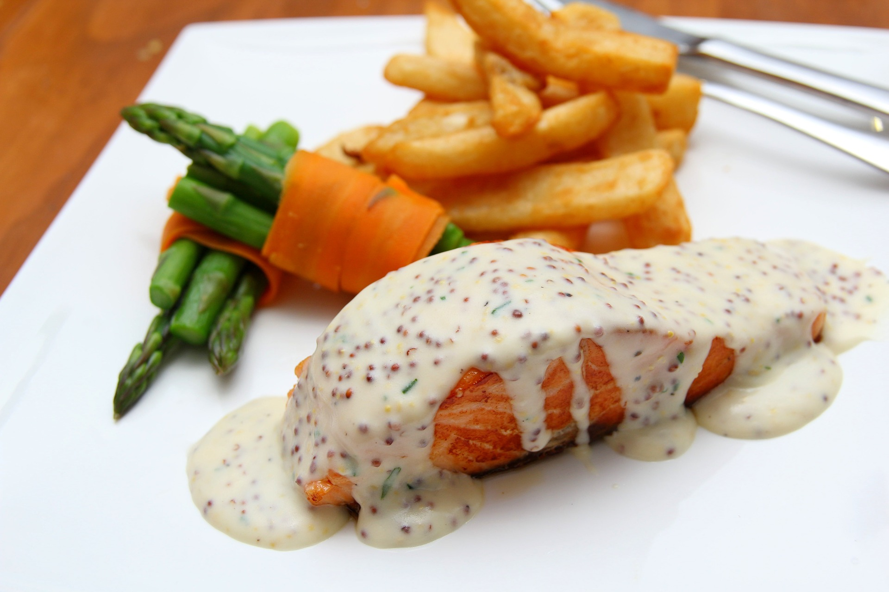
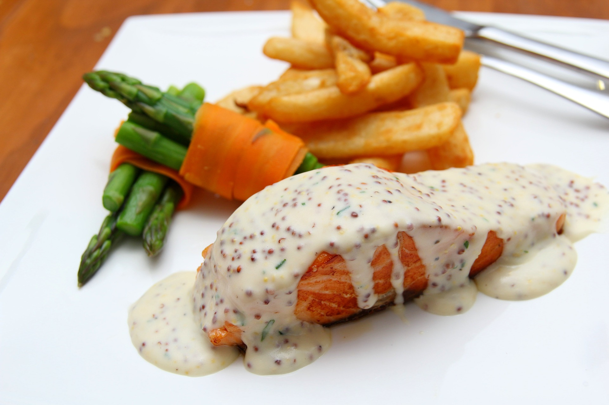

2 tablespoons Dijon mustard
1 tablespoon honey
2 salmon fillets
Place salmon, skin side down in a pie pan covered with aluminum foil.
When done cooking the skin will stick to foil.
Spread salmon with the mixture of mustard and honey.
Cook 400° for about 20 minutes. May recoat with mixture if there is any leftover
Broil until desired.